-
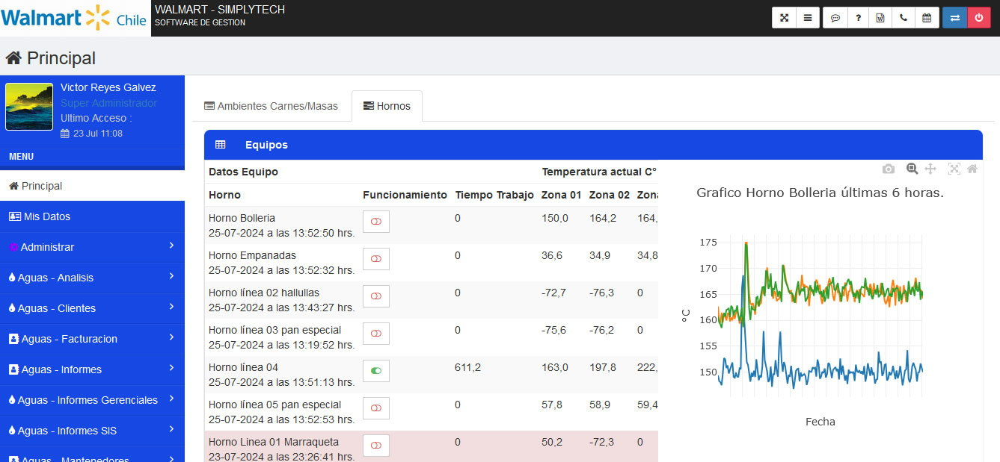
Plataforma Gestión Modular
Plataforma enfocada a gestionar las mediciones de telemetría a través de sus distintas interfaces para cada clientes de la empresa. Ofrece la administración de usuarios, de equipos de telemetría, gestión de mantenciones preventivas y de urgencia a los equipos de telemetría, informes agrupados al tipo de servicio ofrecido (medición temperaturas, GPS y niveles de riego en los campos, voltajes de equipo, etc.), entre otras características.


-
Plataforma Agropraxis
Servicio de consolidación de la carga Frutícola embarcada en contenedores. Se controla el cumplimiento de las instrucciones de carga (cargas específicas). Control de las condiciones de transporte instruidas a la naviera, estiba, sellado y registro de temperaturas. Terminada la faena se emite informe oficial de la actividad desarrollada, documento que será requerido por el seguro de carga en caso de algún siniestro.
-
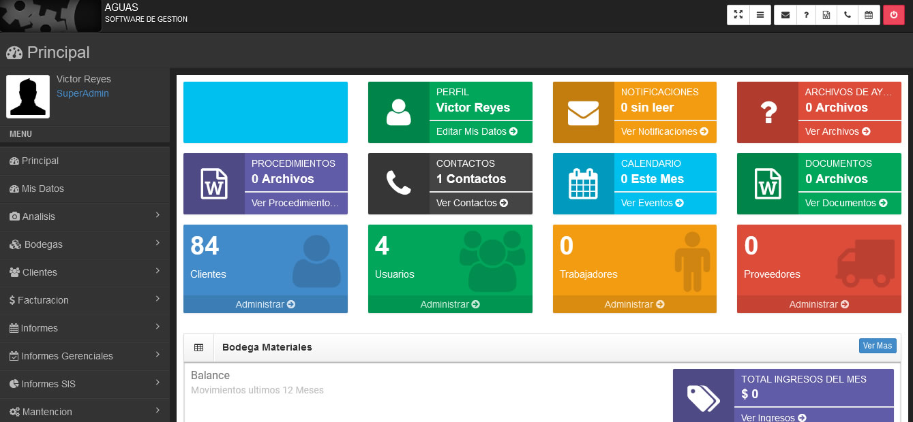
Plataforma Aguas EAPEC
Plataforma diseñada para gestionar la facturación de los medidores de aguas, entre sus características se encuentran la gestión de los clientes, la gestión del medidor o los remarcadores instalados en su propiedad, historial de mediciones, facturaciones, pagos, cortes, reposiciones y retiro de medidores, además de los distintos informes.
Corre en un servidor con PHP 5.3 y no ha tenido mantención desde el 2019, pero sigue funcionando correctamente y no han reportado ninguna falla.
-
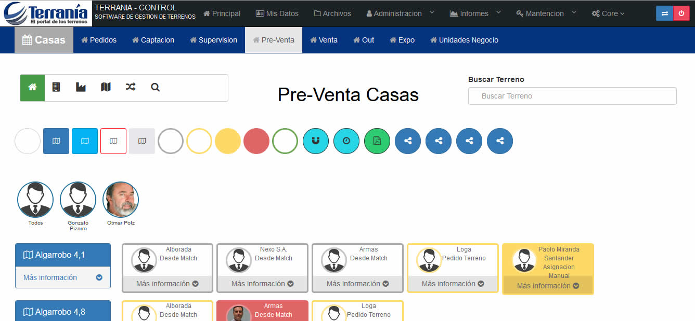
Plataforma Terranía
Plataforma enfocada en la gestión de venta de los terrenos para cada línea de negocios, gestionando de principio a fin cada negociación con las empresas interesadas de forma separada para cada terreno.
-
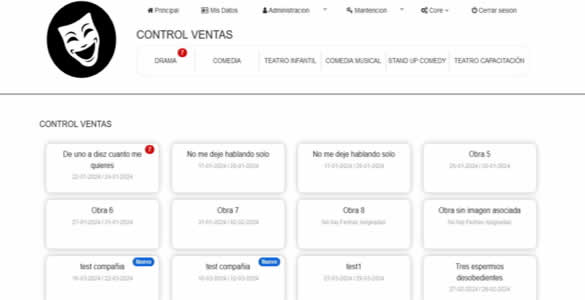
Plataforma Somos Teatro
Plataforma enfocada en la gestión de venta de obras de teatro a las empresas interesadas, gestionando de principio a fin cada negociación con las empresas de forma separada para cada caso.
-
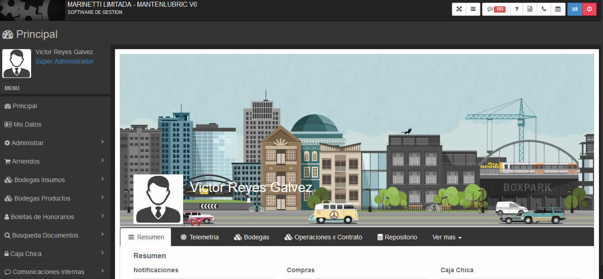
Plataforma Mantenlubric
Este sistema está enfocado a la gestión de lubricación de las máquinas y sus puntos, todo se gestiona a través de contratos donde se indica el número de lubricaciones dentro del año, además poder programas mantenciones preventivas o de emergencia. Posee transacciones para gestionar a los usuarios (con un control de permisos según sus roles), las máquinas, los trabajadores, las bodegas, las compras y ventas, los vendedores y sus negociaciones, entre otras.
-
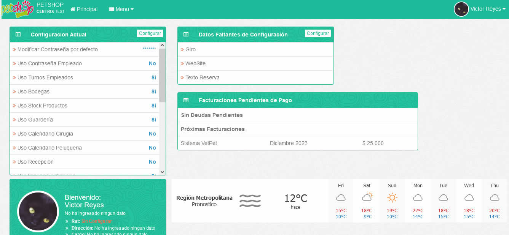
Plataforma SimpliVet Clientes
Plataforma de gestión para centros veterinarios, entre sus funciones se encuentran:
• Administración Centros
• Administración Trabajadores
• Administración productos y servicios
• Administración tutores y mascotas
• etc.
-
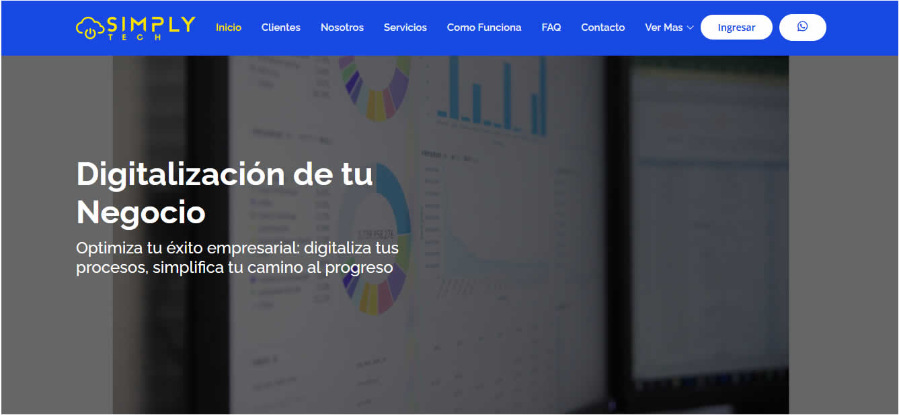
Sitio Web Simplytech
Sitio con información de la empresa, da acceso directo a los clientes a su plataforma, posee funcionamiento estandar de un sitio web de este tipo.
-
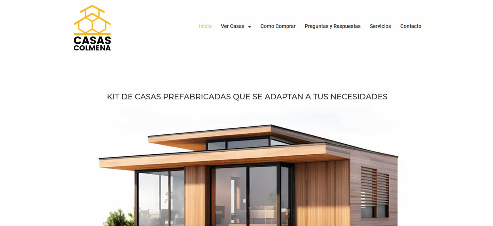
Sitio Web Casas Colmena
Sitio web de acceso a los interesados en kit de casas prefabricadas, posee funcionamiento estandar de un sitio web de este tipo.

-
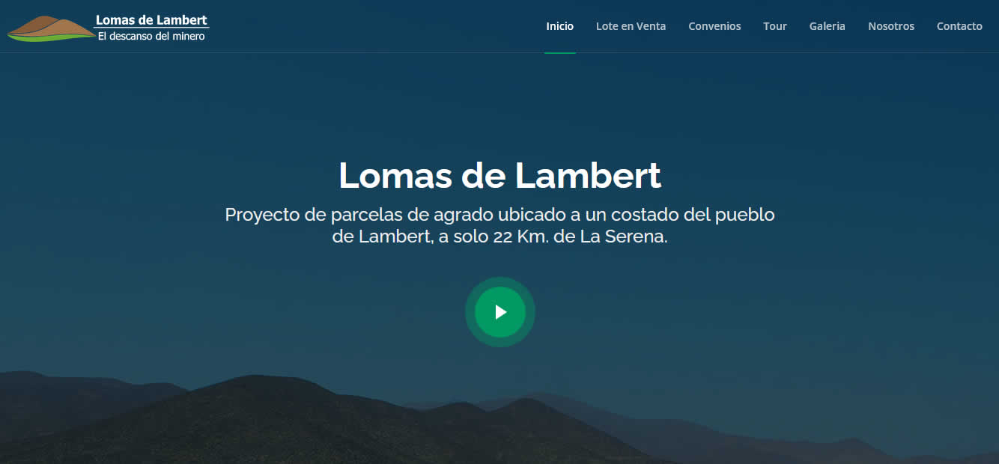
Sitio Web Lomas de Lambert
Sitio web de acceso a los interesados en comprar una parcela en esta zona, posee funcionamiento estandar de un sitio web de este tipo.
-
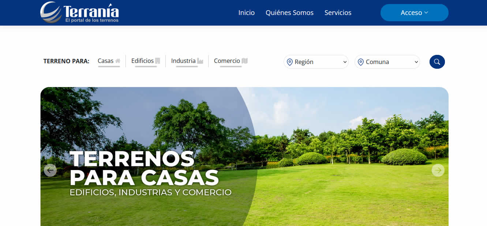
Sitio Web Terranía
Sitio web que muestra un listado de terrenos disponibles para la compra, separandolos por lineas de negocios, por region y comuna.
Obtiene los datos de las consultas a traves de un webservice y a traves de la direccion IP muestra 4 terrenos destacados cerca de la ubicacion entregada por dicha IP.

-
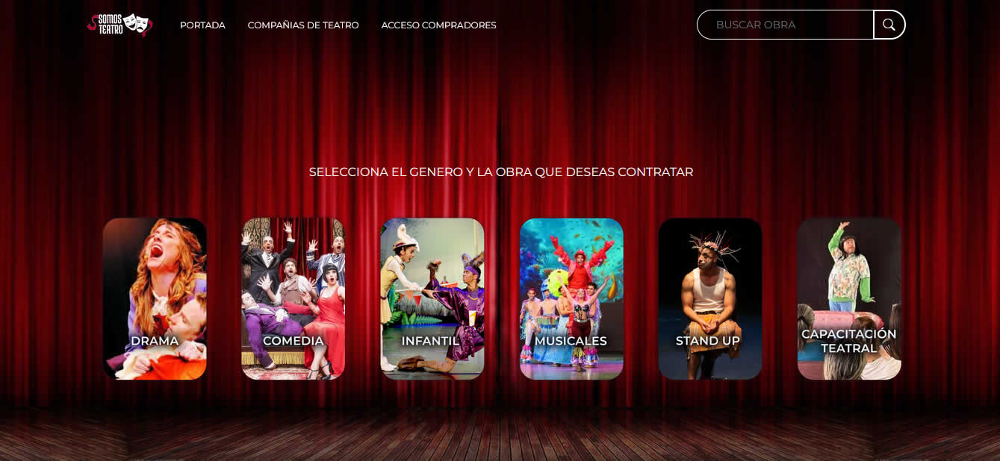
Sitio Web Somos Teatro
Sitio web de la empresa, esta se conecta con la plataforma de administración a través de Web Services para obtener las obras y su detalle.
-
Sitio Web Aktion
Sitio web con información de esta firma de contadores, posee un formulario de contacto.
-
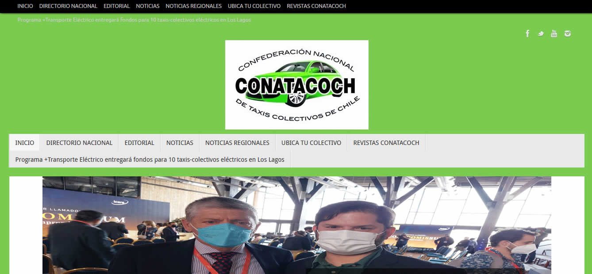
Sitio Web Conatacoch
Sitio web del gremio de colectivos, es una fusión de sitio web con un blog y otros servicios. La administra el presidente del gremio.
-
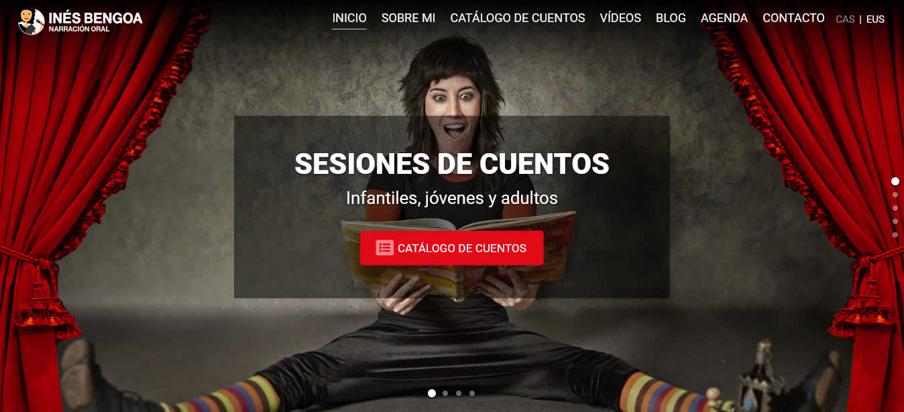
Inés Bengoa - Narración Infantil
En este sitio solo hice una mantención de plugins y correcciones visuales debido a algunas incompatibilidades entre plugins.
Actualmente fue rediseñada sobre otra arquitectura.
-
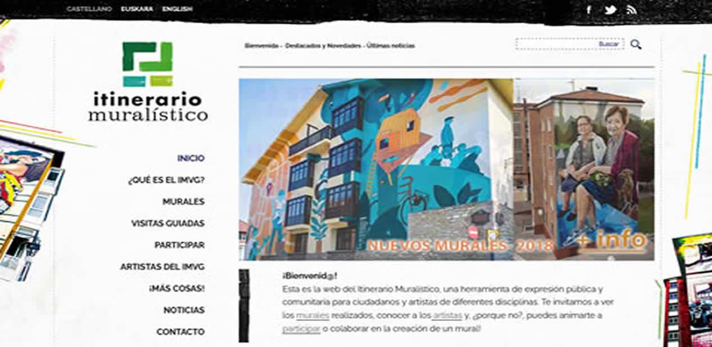
Itinerario muralístico
Creación del sitio en wordpress a partir de la versión antigua hecha en html y javascript.
-
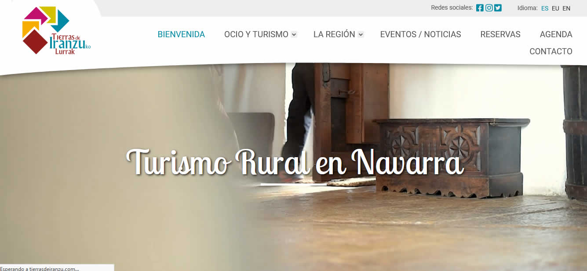
Turismo Rural en Navarra
Creación del sitio en wordpress a partir de la versión antigua hecha en joomla.
Actualmente fue rediseñada sobre otra arquitectura manteniendo casi todas sus caracteristicas.
-
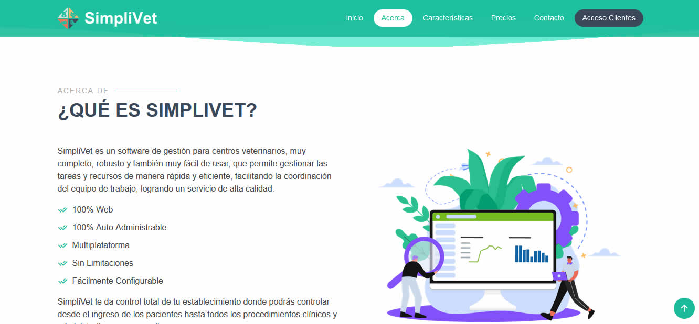
SimpliVet
Sitio web de presentación del software de gestión para centros veterinarios.